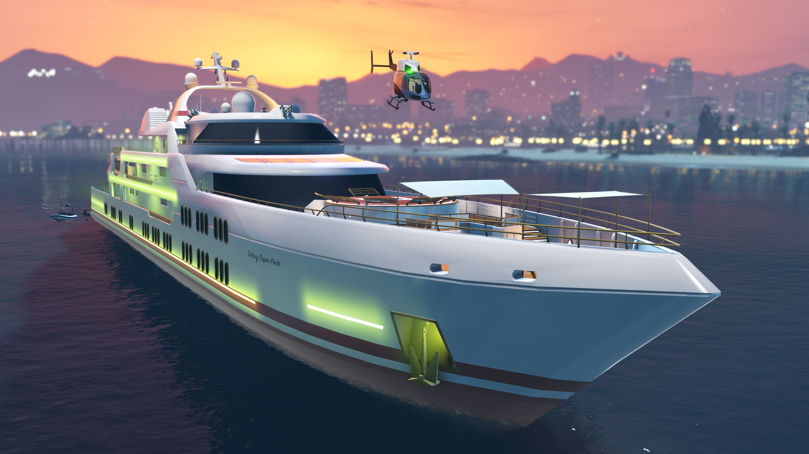
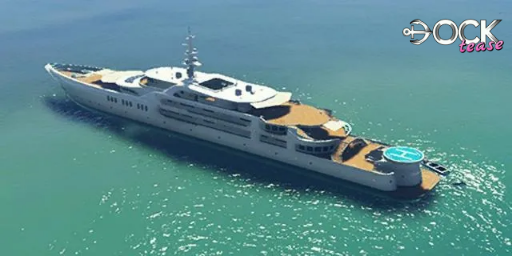
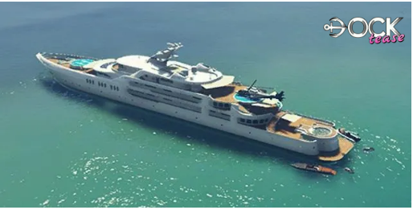
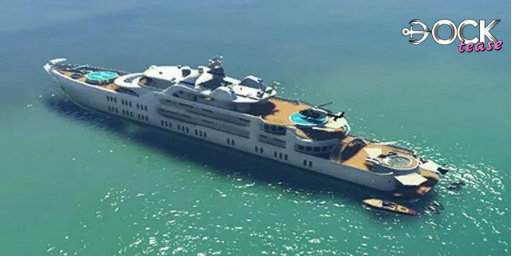

Yatch
O Super-Iate Galaxy é a propriedade de luxo de maior custo no GTA Online. Ele é, acima de tudo, um símbolo de status e não um negócio lucrativo, embora ofereça missões e utilidades defensivas.
Metodo De Obter
Você pode comprar um Super-Iate no site DockTease, que você pode acessar pelo navegador da Internet no seu smartphone. O site pode ser encontrado na aba Dinheiro e Serviços ou inserindo o seguinte URL no seu navegador: www.docktease.com.
No total, existe apenas 1 localização (o iate flutua na água), mas 3 modelos/tamanhos diferentes de iates disponíveis para compra. O preço varia dependendo do modelo escolhido.
- The Orion (Mais Barato): $ 6.000.000 
- The Pisces: $ 7.000.000 
- The Aquarius: $ 8.000.000 
Melhorias e Personalizações
Acessórios
"Exiba um nível personalizado de
decadência com sua escolha
de acessórios dourados ou cromados.
Aplicado em suas grades, âncora,
bordas de vigia e heliporto."
- Acessórios Cromados: Incluídos
- Acessórios de Ouro: $ 750.000
Iluminação
"Destaque-se ou permaneça no escuro:
as formas e a tonalidade do seu equipamento
de iluminação falam muito sobre suas
necessidades de impressionar."
- Verde: Incluído
- Azul: $ 315.000
- Rosa: $ 330.000
- Ouro: $ 350.000
- Verde Vivaz: $ 500.000
- Azul Vivaz: $ 525.000
- Rosa Vivaz: $ 550.000
- Ouro Bivaz: $ 600.000
Esquema de Cores
"Do branco imperial ao preto de
navio furtivo, temos esquemas de cores
que combinam perfeitamente com suas
ilusões de grandeza."
- Pacifico: Incluído
- Náutico: $ 135.000
- Marinheiro: $ 170.000
- Comerciante: $ 195.000
- Imaculado: $ 220.000
- Azure: $ 300.000
- Uniforme: $ 315.000
- Rubi: $ 340.000
- Mediterrâne: $ 365.000
- Vintage: $ 425.000
- Continental: $ 450.000
- Navio de Guerra: $ 475.000
- Comando: $ 495.000
- Clássico: $ 620.000
- Intrépido: $ 635.000
- Voyager: $ 650.000
Personalização
- O jogador pode selecionar entre 46
bandeiras para colocar na parte traseira. - O jogador também é capaz de da um nome
personalizado par o Iate (até 20 caracteres).
O nome padrão é "Galaxy Super Yacht"
- Decoração/Cor: $ Variável
Alterações estéticas (bandeira, iluminação, cores, etc.).
Lucro e Funcionamento
O Iate gera lucro apenas através de uma série de missões ativas e, notavelmente, é a única propriedade que gera um custo passivo de manutenção.
▸ Lucro Principal (Ativo): Missões "Uma Vida Super-Iate"
- Função Ativa: Série de seis missões de história iniciadas pelo Capitão Brendan Darcy.
- Rendimento (Primeira Vez): Os pagamentos são fixos e variam de $ 20.000 a $ 30.000 por missão.
- Frequência: As missões podem ser repetidas a qualquer momento.
- Desafio: Não são um método eficiente para grinding de dinheiro devido aos baixos pagamentos por tempo gasto.
▸ Renda Passiva: Não Existe
- Cofre: O Iate não possui um cofre ou qualquer sistema de produção que gere renda passiva.
- Custo de Manutenção: O Iate gera um custo passivo de manutenção (uma conta diária no jogo) que você deve pagar, diminuindo seu lucro líquido geral.
▸ Benefícios Defensivos e de Conveniência
- Defesas Aéreas: Você pode ativar um sistema de defesa que impede que outros jogadores se aproximem ou ataquem o Iate com aeronaves (taxa de $1.000 por minuto).
- Posicionamento: Você pode pagar ao Capitão para mover o Iate para qualquer um dos 12 locais pré-determinados no mapa.
- Status VIP: Serve como um local seguro e de alto status para relaxar ou iniciar serviços de CEO/VIP.
O Super-Iate é um investimento de lazer e conveniência para quem já tem dinheiro de sobra. Ele não oferece retorno financeiro competitivo, mas sim acesso a missões únicas e a funcionalidade de uma base defensiva móvel na água.
Assista a este guia para saber mais sobre a Boate no GTA Online. Este vídeo explica como funciona o esquema e como gerenciar.
l